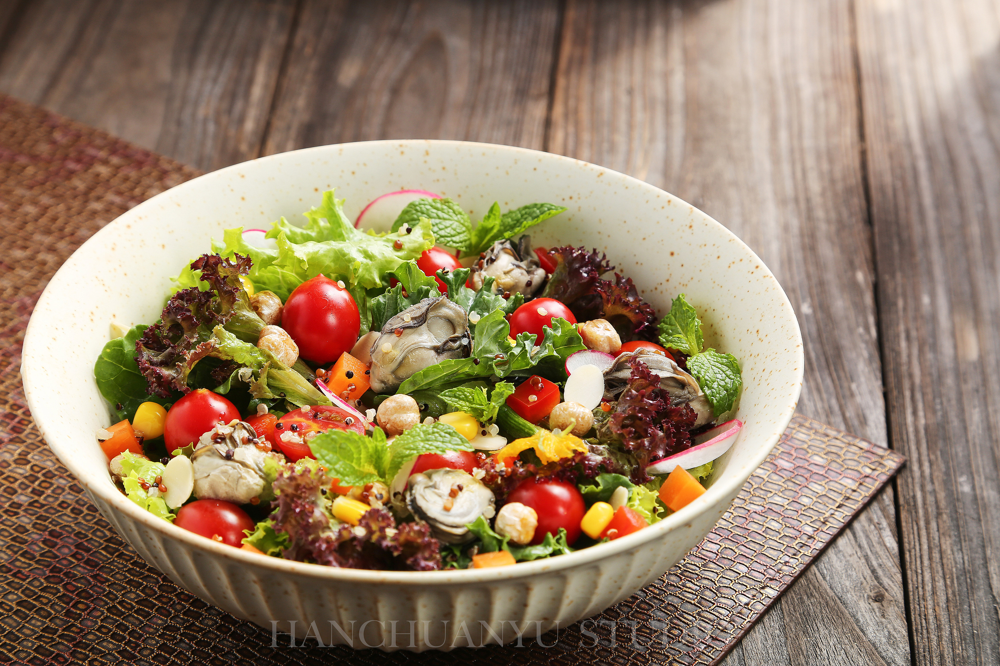
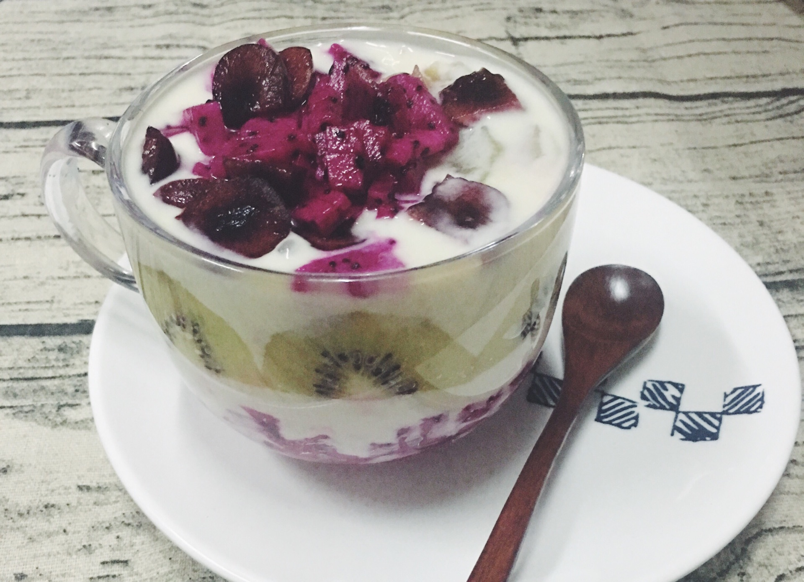

健康早餐
这是一道营养丰富的早餐食谱，包含燕麦、牛奶、坚果和水果。
材料
- 燕麦 - 50克
- 牛奶 - 200毫升
- 坚果 - 30克
- 水果 - 100克
步骤
- 将燕麦放入碗中，加入牛奶。
- 将碗放入微波炉中加热2分钟。
- 加入坚果和切碎的水果。
- 搅拌均匀后即可享用。
营养信息
热量: 350卡路里 | 蛋白质: 10克 | 脂肪: 15克 | 碳水化合物: 45克

清爽沙拉
这是一道简单易做的沙拉，适合夏季食用，清凉爽口。
材料
- 生菜 - 100克
- 黄瓜 - 50克
- 番茄 - 50克
- 橄榄油 - 20毫升
- 盐 - 适量
- 黑胡椒 - 适量
步骤
- 将生菜、黄瓜和番茄洗净切块。
- 将所有材料放入大碗中。
- 加入橄榄油、盐和黑胡椒。
- 搅拌均匀后即可享用。
营养信息
热量: 120卡路里 | 蛋白质: 2克 | 脂肪: 8克 | 碳水化合物: 10克

烤鸡胸肉
这是一道低脂高蛋白的主菜，适合减肥和健身人士。
材料
- 鸡胸肉 - 200克
- 橄榄油 - 10毫升
- 蒜粉 - 5克
- 黑胡椒 - 适量
- 盐 - 适量
- 柠檬汁 - 10毫升
步骤
- 将鸡胸肉洗净，用纸巾擦干。
- 将橄榄油、蒜粉、黑胡椒、盐和柠檬汁混合，涂抹在鸡胸肉上。
- 将鸡胸肉放入预热至180度的烤箱中，烤25-30分钟。
- 取出鸡胸肉，静置5分钟后切片即可享用。
营养信息
热量: 250卡路里 | 蛋白质: 30克 | 脂肪: 10克 | 碳水化合物: 0克

水果酸奶杯
这是一道清爽的甜点，含有丰富的维生素和益生菌。
材料
- 酸奶 - 150克
- 草莓 - 50克
- 蓝莓 - 50克
- 蜂蜜 - 10毫升
- 燕麦片 - 30克
步骤
- 将草莓和蓝莓洗净，切成小块。
- 将酸奶放入杯中，加入水果块。
- 淋上蜂蜜，撒上燕麦片。
- 搅拌均匀后即可享用。
营养信息
热量: 180卡路里 | 蛋白质: 6克 | 脂肪: 4克 | 碳水化合物: 30克